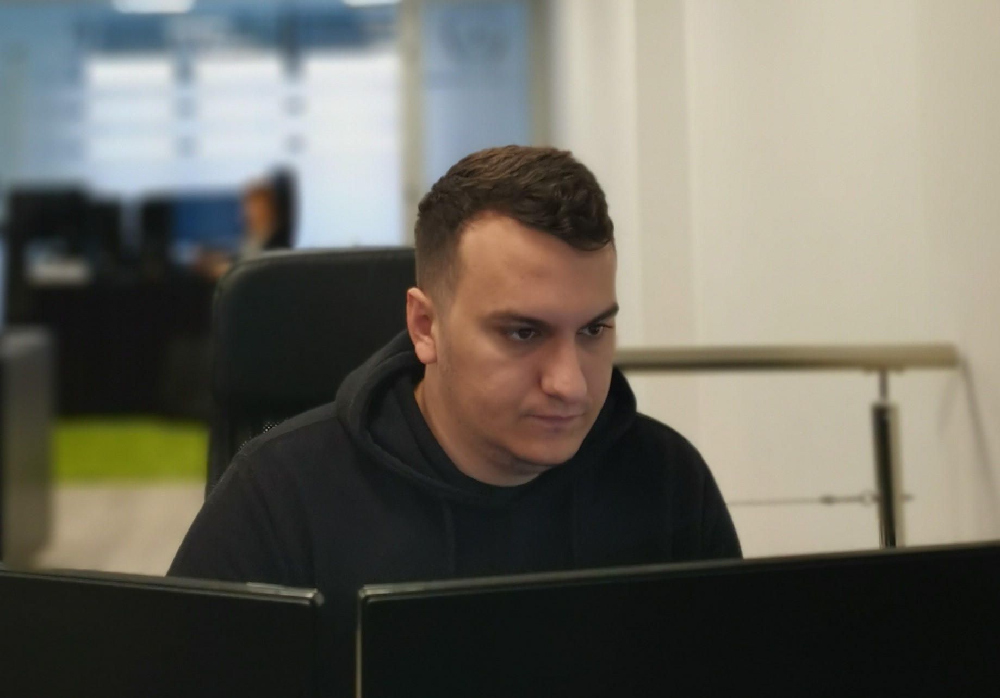

More about me
I'm a very curious person. I'm always trying to be informed about the cutting edge technology. I'm responsible and patient. I'm always trying to help and spread the good vibes around me.
#work
#code
#serious
My daily routine


always learning...